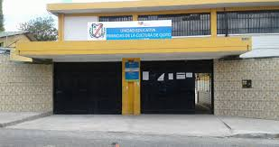
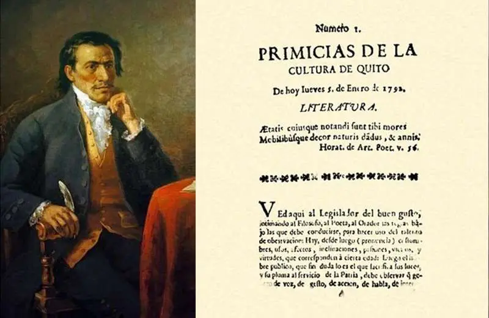
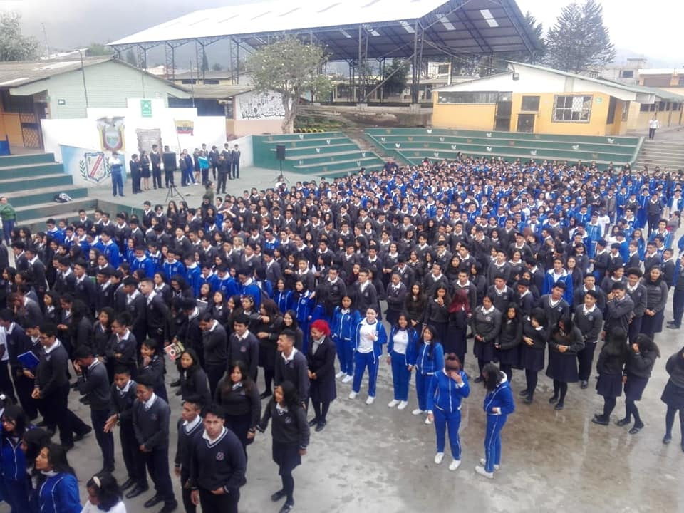
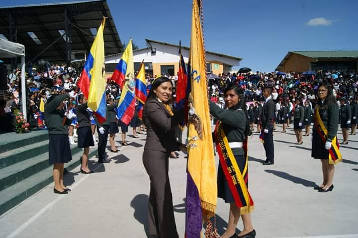
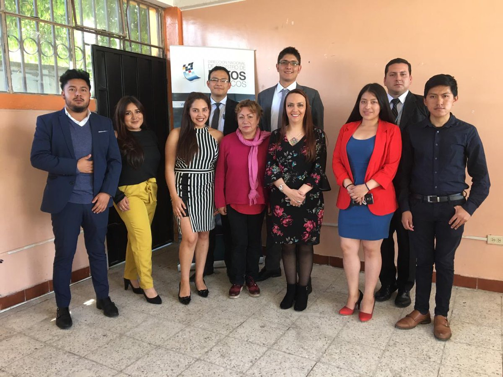
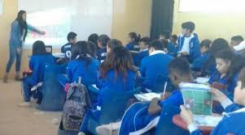
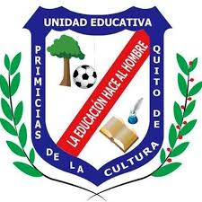

The Primicias de la Cultura Educational Unit is one of the most representative public institutions located in southern Quito. Inspired by the intellectual legacy of Eugenio Espejo, the school symbolizes culture, education, leadership, and academic development for thousands of Ecuadorian students.
Explore History
An institution built upon culture, knowledge, and educational transformation.

The institution takes its name from the historical newspaper “Primicias de la Cultura de Quito”, created by Eugenio Espejo in 1792. The newspaper became one of the most influential intellectual symbols during Ecuador’s colonial period and promoted education, philosophy, science, and critical thinking.
The institution was officially founded in 1987 through a ministerial agreement. Since then, it has educated generations of students and has become one of the most important educational institutions in southern Quito.

Over the years, the school incorporated modern technologies, technical specializations, and innovative educational projects to improve the academic and professional development of its students.
More than a school, an educational community that inspires generations.

The institution offers elementary, middle, and high school education, including several technical specializations focused on academic and professional growth.

The school preserves the intellectual and cultural legacy of Eugenio Espejo by promoting values, critical thinking, leadership, and human development.

Thousands of students have been part of this institution, transforming it into a recognized educational community within the Metropolitan District of Quito.
The most important moments in the institution’s history.
Eugenio Espejo publishes the newspaper “Primicias de la Cultura de Quito”.
Official creation of Primicias de la Cultura School.
Foundation of Primicias de la Cultura Elementary School.
Institutional unification of school and high school sections.
Spaces, students, and the essence of the institution.
